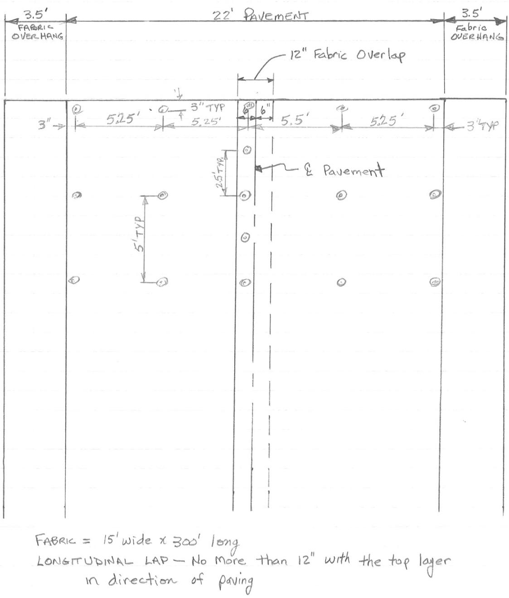
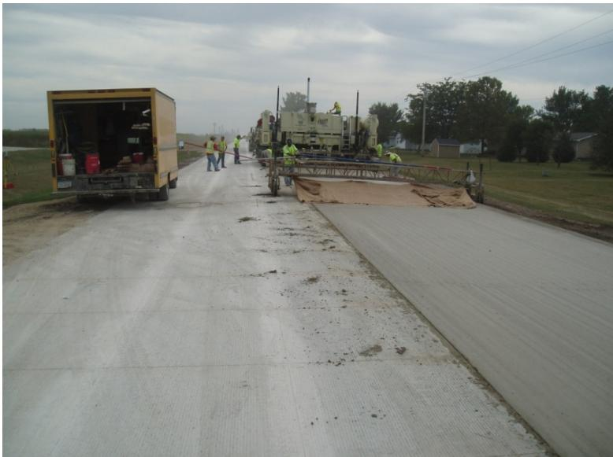
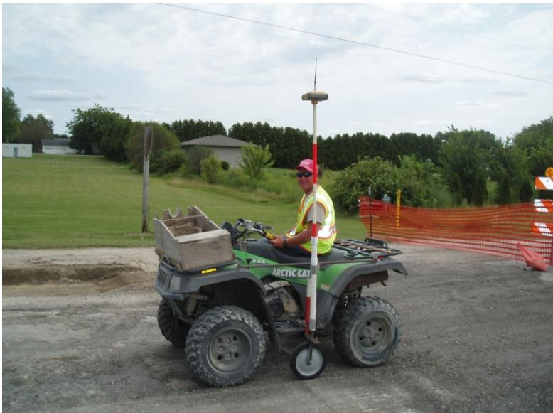
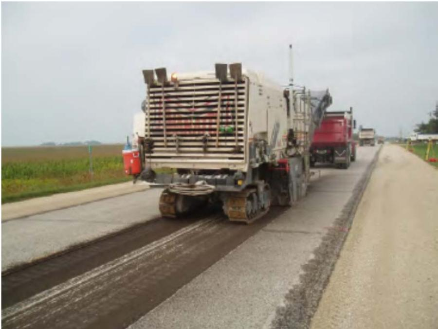
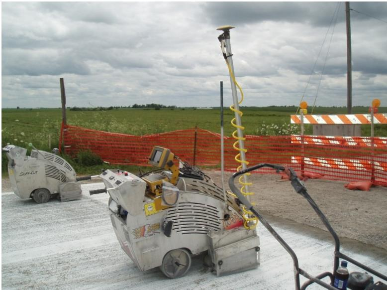
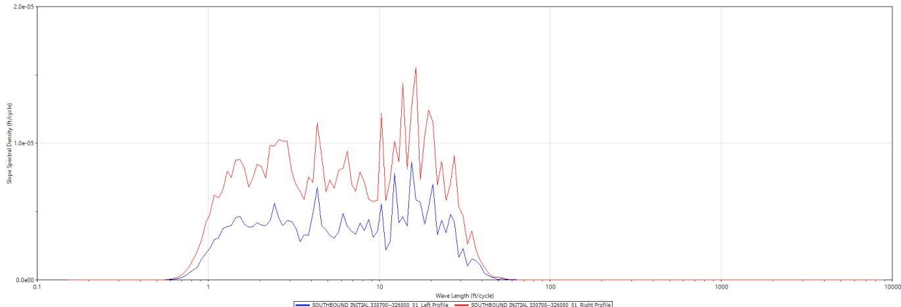
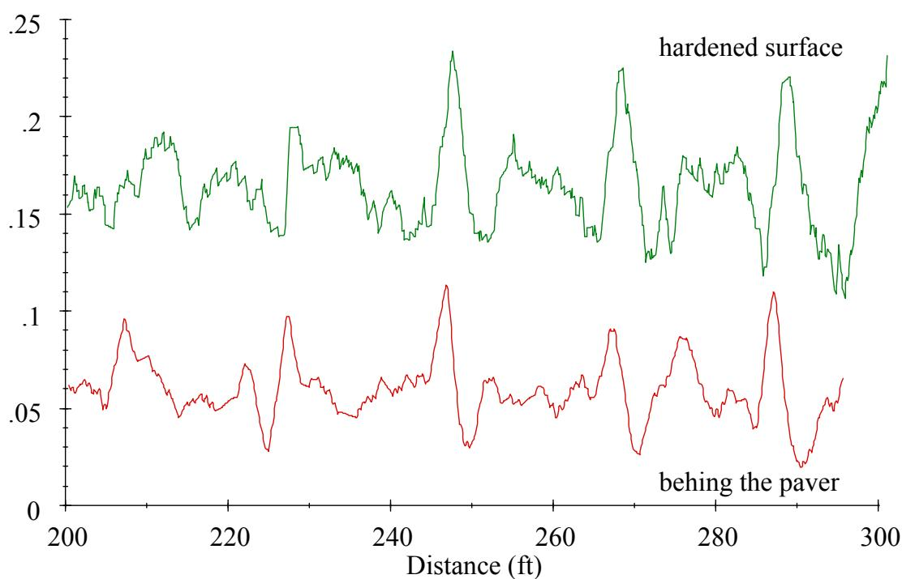

Concrete Paving Construction
Concrete paving construction is the systematic engineering and placement of Portland cement concrete to create durable, load-bearing road surfaces that maintain structural integrity under environmental and traffic stresses. The process relies on precise mixture design and material optimization strategies, such as multi-layer placement or specialized joint formation techniques, to balance cost efficiency with long-term performance requirements like skid resistance and durability [1] [2]. Modern implementation utilizes automated machine-control systems and intelligent sensing frameworks to guide placement equipment without physical guides, ensuring strict geometric tolerances and real-time quality assurance during installation [3]. Construction methodologies also encompass rehabilitation applications where new concrete layers are bonded or separated over existing pavement structures to restore functional service life [4].
CP Tech Center reports covering “Concrete Paving Construction” also include the following subtopics: Auto-Float, Dowel Basket Ripple, GPS Pavement Surface Mapping, Intelligent Construction Systems, Knife Joint Former, Longitudinal Joint Forming Knife, Safety Edge, Stringless Paving, and Two-Lift Paving.
Concrete paving construction unifies methods that prioritize precision, efficiency, and structural integrity during installation. Auto-Float mechanically smooths the surface immediately behind slip-form pavers to ensure uniform density before curing, while Stringless Paving achieves high-speed placement by using GPS and 3D models for grade control instead of physical stringlines. To maintain quality without manual intervention, Intelligent Construction Systems enable real-time assurance by continuously sensing pavement properties to verify compliance with structural specifications. Joint formation relies on specialized tools: the Knife Joint Former creates weakened planes in fresh concrete to eliminate longitudinal sawing, a function mirrored by the Longitudinal Joint Forming Knife which allows high-speed slipform placement without subsequent cutting. For complex geometries, Safety Edge employs a temporary wedge to form tapered shoulder transitions during staged placement, ensuring safe vehicular access while maintaining roadway integrity. Material optimization occurs through Two-Lift Paving, which applies distinct concrete mixes in successive layers that bond into a single unit to balance cost and performance. Finally, GPS Pavement Surface Mapping generates precise three-dimensional data of existing surfaces to inform the design of overlays, whereas Dowel Basket Ripple represents a specific defect where foundation rebound under paver pressure causes periodic roughness.
Sources (8)
Sub-concepts (9)
Fundamentals
Concrete pavement construction relies on the precise placement and consolidation of fresh concrete to form a continuous, load-bearing slab that provides structural support and surface functionality. The integrity of the final pavement structure depends heavily on the quality of bonds between successive layers or adjacent elements, which requires careful coordination of placement sequences and surface preparation to ensure monolithic behavior [2]. Modern construction practices increasingly utilize automated machine control and integrated sensing systems to achieve high-precision grading and alignment without the need for traditional physical guide strings, thereby enhancing dimensional accuracy during placement.
Key findings
- Unbonded concrete overlays significantly reduced deflections and longitudinal stresses in composite pavements through increased flexural rigidity, although this benefit was accompanied by elevated transverse tensile stresses that were highly sensitive to joint depth [5].
- Two-lift paving methods demonstrated superior durability and ride quality potential but faced limited U.S. adoption due to high production costs, logistical complexities, and difficulties in maintaining bond integrity compared to standard one-lift construction [2].
- The industry shifted from empirical design methods toward performance-based systems that integrated mechanistic-empirical approaches to account for materials, traffic loading, and climate, aiming to reduce life-cycle costs while managing compatibility issues with new materials [1].
- Real-time profiling at the slip-form paver effectively isolated specific sources of roughness such as dowel bar ripple but could not accurately predict absolute hardened smoothness values due to differences in measurement wavebands and calibration [6].
- Scarification or patching base preparation methods yielded superior shear retention, faulting resistance, and load transfer consistency compared to asphaltic stress relief layers for unbonded overlays [7].
- GPS-based surface mapping provided viable solutions for three-dimensional profiling but was constrained by environmental factors such as signal interference and communication latency, requiring slow data collection speeds to maintain vertical accuracy [3].
- Stringless construction technologies decreased the required roadway width for equipment and improved profile accuracy, facilitating maintenance of traffic while reducing concrete quantity overruns [4].
- Initial pavement roughness was significantly influenced by short-wavelength irregularities from oscillating correcting beams and dowel-bar inserter vibration, which were smoothed during finishing but captured by real-time sensors as transient artifacts [8].
Adoption Trade-offs of Advanced Paving Methods
Evidence: 5 reports (2 primary)
Research problem — The industry’s shift toward high-production one-lift methods driven by low-bid cost pressures restricts the ability to optimize pavement performance through material stratification, limiting solutions for skid resistance and noise reduction [2]. Despite demonstrated technical feasibility and long-term durability in experimental projects, widespread adoption of two-lift construction remains hindered by inherent risks of equipment failure and logistical complexity associated with dual batch plants and multiple pavers [2].
State of the art — The concrete paving industry is currently dominated by high-production, one-lift methods driven by low-bid competition and the need to match asphalt paving speeds [2]. Although two-lift techniques offer material optimization and durability benefits, their adoption in the U.S. remains limited due to significant cost penalties from requiring dual plants and machinery, as well as operational risks associated with maintaining the bond between lifts of differing properties [2].
The figure below illustrates a two-lift paving application in Austria.
 A fleet of yellow construction vehicles operating on a wet highway. [2]
A fleet of yellow construction vehicles operating on a wet highway. [2]
The image displays a convoy of heavy-duty yellow trucks and specialized machinery traveling along a multi-lane roadway bordered by dense forest.
Findings from the reports
- Demonstrated that intelligent construction systems face significant adoption resistance due to durability concerns, as contractors reported wire leads are susceptible to damage and software failures occur [5].
- Found that the manual Iowa Maturity Device remains widely accepted over advanced computer-managed monitoring tools because of its lower cost and reduced labor requirements [5].
- Measured that adding widened edge sections reduces deflection and longitudinal stresses by increasing flexural rigidity, whereas variations in pavement crown have an insignificant effect on induced stresses [5].
- Observed that deeper cracks at the boundary between old and new layers markedly increase stresses in the underlying asphalt concrete, highlighting the critical nature of interface integrity [5].
- Reported that two-lift paving is hindered in the U.S. by high costs and logistical complexity, with experimental projects often costing twice as much as conventional single-lift construction [2].
- Identified that U.S. adoption of two-lift paving is limited by the inefficiency of managing two separate paving plants and machines, making it difficult to compete in low-bid environments [2].
Novelty & rigor — Novelty lies in decoupling structural base requirements from surface performance needs by utilizing distinct concrete mixes for each layer, such as employing lower-quality or recycled aggregates in the bottom lift while reserving high-durability aggregates for a thin top layer [2]. Adoption is constrained by significant economic and logistical trade-offs, including doubled construction costs due to the need for two paving plants and machines, which hinders implementation in high-production environments [2].
Reported values
| Parameter | Value | Context | Source |
|---|---|---|---|
| bottom layer thickness | 2 inches | two-lift concrete paving bottom layer using local limestone aggregates | [2] |
| maximum time for equipment malfunction repair | 30 minutes | top lift operation in two-lift concrete paving to prevent loss of exposed bottom lift concrete | [2] |
| top layer depth | 2 inches | two-lift concrete paving top layer made of harder aggregates | [2] |
| waiting time before second lift placement | 3060 minutes | prevention of mixing between two concretes in two-lift paving | [2] |
| base temperature for water spraying | 100 degrees Fahrenheit | when the base reached this temperature | [5] |
| joint sawing length eliminated | 17.5 miles | longitudinal joint forming knives on this project | [5] |
Across the reviewed reports, the adoption of advanced concrete paving methods is primarily constrained by economic viability and logistical complexity rather than technical feasibility. While intelligent construction systems face resistance due to durability concerns regarding equipment damage and software reliability, two-lift paving is hindered by high production costs and the inefficiency of managing dual plants in low-bid markets. Consequently, despite potential efficiency gains or structural benefits from these innovations, contractors often prefer established manual methods that offer lower costs and reduced labor requirements compared to the operational burdens of advanced technologies. [2] [5]
Implications — The industry’s entrenched reliance on low-bid, high-volume construction models creates significant economic barriers to adopting advanced methods like two-lift paving, effectively stifling innovation despite the technical benefits of multi-layer systems [2]. Transitioning from empirical practices to performance-based frameworks requires overcoming substantial investment and training hurdles associated with intelligent construction systems, as current workflows lack the validated real-time characterization methods needed to balance competing functional requirements like smoothness and noise [1]. Successful implementation of complex overlay techniques demands rigorous pre-construction evaluation and precise surface preparation to mitigate interlayer risks, highlighting a gap where standardized design tools fail to adequately address the specific inputs and deficiencies inherent in different paving methods [4].
Limitations — The industry’s reluctance to adopt advanced methods is often driven by misconceptions regarding cost and complexity, despite evidence of their long-term performance benefits [4]. Technical reservations include the risk of interlayer debonding due to property mismatches and operational vulnerabilities where equipment failures can lead to significant material waste within narrow placement windows [2]. Practical implementation is further hindered by environmental sensitivity that disrupts automated control systems, as well as a lack of standardized design procedures and inconsistent regulatory interpretations across different agencies [3] [4].
The following figure illustrates a typical fabric interlayer layout used to address these construction challenges.

Fabric Interlayer Layout [3]The figure displays a plan view of a pavement section detailing the placement of geotextile fabric, including specific dimensions for overhangs and longitudinal overlaps.
Stringless Paving Methodology and Adoption Trade-offs
Evidence: 5 reports (5 primary)
Stringless paving methodology replaces traditional physical guide strings with automated machine-control systems that utilize precise digital models and real-time sensor feedback to direct slip-form pavers [3]. The effectiveness of this approach depends on accurate existing surface data, proper equipment calibration, and environmental conditions that support the operation of line-of-sight sensors [3].
The following figure illustrates a mainline paving operation utilizing this stringless methodology.

Mainline paving operations on US Highway 65 utilizing a slipform paver and finishing equipment. [3]The image depicts the construction of a concrete road surface using heavy machinery, including a large slipform paver laying fresh concrete and a trailing work-bridge with burlap drag for finishing.
Research problem — The industry struggles to reconcile the high precision required for stringless control systems with the practical limitations of GPS technology, such as signal interference and latency, which compromise vertical accuracy during mobile surveying [3]. Widespread adoption is hindered by persistent misconceptions regarding cost and constructability, alongside a lack of standardized design methodologies that create uncertainty in material selection and construction logistics for agencies [1] [4]. Construction workflows face critical trade-offs between maintaining strict surface smoothness specifications and managing concrete yield when survey data is finalized late, forcing reactive adjustments that degrade ride quality [7] [5].
The following figure illustrates an ATV equipped with a GPS, highlighting the technology central to these precision challenges.

ATV equipped with a GPS receiver mounted on a pole and wheel for pavement surface mapping. [3]The image shows an ATV carrying a wooden box in the rear rack while a worker operates it, featuring a tall vertical pole attached to the vehicle that supports a GPS antenna at its apex.
State of the art — Stringless paving has transitioned from experimental application to a standardized industry practice, replacing traditional stringlines with GPS and total station-based machine control systems to establish precise vertical grades [3] [4]. The methodology enables the achievement of tight vertical tolerances (0.01–0.05 feet) and improved quantity estimation accuracy while significantly reducing survey time and paving train width requirements [3] [4]. Successful adoption requires rigorous pre-construction planning to integrate accurate existing surface mapping with design models, ensuring that geometric corrections for features like bridge approaches are resolved before placement begins [3].
The following figure illustrates milling to grade using automatic machine control.

A milling machine equipped with automatic control systems operating on a roadway. [4]The image displays a large white milling machine traveling along a paved road, leaving behind a darkened strip of milled surface while adjacent lanes remain intact. This equipment utilizes automatic machine control to mill an existing pavement to a design profile and cross-slope. This process allows concrete overlay volumes to be more tightly controlled by correcting deviations through varying the thickness of the concrete overlay.
Findings from the reports
- Unbonded concrete overlays provided a durable, long-life alternative to asphalt for rehabilitating composite pavements by extending service life while maintaining structural integrity over existing asphalt layers [5].
- The concrete paving industry shifted from traditional method-based specifications toward sophisticated performance-based systems that integrated mechanistic-empirical approaches to account for materials, construction, traffic loading, and climate [1].
- Thin concrete overlays effectively bridged existing asphalt distresses when prepared with scarification or patching, which yielded superior bond strength and lower visual distress compared to stress relief layers [7].
- The integration of GPS pavement surface mapping with intelligent construction systems enabled precise establishment of profile grades and concrete yield estimates prior to letting, thereby reducing survey time and minimizing quantity overrun concerns compared to conventional methods [3].
- Concrete overlays were a viable, cost-effective rehabilitation strategy across diverse climates and existing pavement conditions, resulting in the construction or design of projects in nine states [4].
- Composite concrete pavements utilizing widening sections and overlays exhibited significantly reduced deflections and longitudinal stresses due to increased flexural rigidity and arch action confinement, although this benefit came with elevated transverse tensile stresses in the underlying layers [5].
- Various concrete maturity monitoring devices yielded comparable results for determining when pavement could be safely opened to traffic, with accuracy achievable through a minimum of four daily temperature readings to capture maximum and minimum values [5].
- Concrete mix designs had to integrate a multitude of new, sometimes marginal, materials, resulting in serious compatibility problems and reduced tolerance for variations compared to traditional volumetric proportioning [1].
- Intelligent construction systems enabled continuous, real-time sensing to allow automatic adjustments during placement rather than relying on discrete sampling, aiming to minimize life-cycle costs and lane closure time [1].
- The addition of synthetic fibers did not significantly impact faulting, joint movement, or load transfer performance but introduced construction challenges such as fiber clumping and surface ‘hairy’ textures that required operational adjustments [7].
- Stringless paving using automated machine control was successfully implemented on several projects to eliminate the need for physical guide strings, though its effectiveness relied heavily on proactive communication and accurate pre-construction modeling of the existing surface [3].
- Stringless paving systems utilizing total station controls achieved tight vertical tolerances of 0.01–0.05 feet, enabling contractors to meet smoothness specifications and maintain concrete yield within a 100%–110% range [3].
- The integration of maturity monitoring allowed for early joint sawing within five to nine hours and the restoration of local traffic access in less than 24 hours once flexural strength reached 350 psi, significantly reducing overall construction timelines [3].
- Concrete paving construction for overlays faced significant challenges in accurate surface mapping and precise longitudinal joint alignment, where traditional manual methods often resulted in unacceptable deviations from original centerlines [3].
- GPS-based surface mapping was constrained by environmental factors such as signal interference and communication latency, requiring slow data collection speeds to maintain vertical accuracy [3].
- The field application program highlighted constructability challenges such as maintaining traffic flow, matching existing features like curbs and inlets, and the potential cost savings of using geotextile separation layers over asphalt in unbonded designs [4].
- The field application program demonstrated the feasibility of constructing overlays under live traffic using stringless paving technologies and staged construction plans to maintain safety and efficiency [4].
- Widespread adoption of concrete overlays was often hindered by funding constraints and the need to integrate them into routine asset management practices rather than treating them as experimental projects [4].
- Concrete paving construction for overlays required rigorous pre-construction evaluation of existing pavement conditions and vertical constraints to select appropriate bonded or unbonded designs that addressed specific distresses and traffic loads [4].
- Successful implementation depended on optimizing concrete quantities through detailed surface mapping while managing trade-offs between smoothness, material usage, and the retention of existing features like curbs and inlets [4].
Novelty & rigor — The primary novelty lies in the integration of stringless machine control with GPS surface mapping to eliminate physical guide strings, enabling high-precision grading in constrained geometries while reducing roadway occupation and enhancing safety [3] [4]. Methodological distinctiveness is further defined by the synthesis of automated control with geotextile bond breakers and maturity-based traffic opening protocols to resolve trade-offs between construction yield, smoothness tolerances, and schedule acceleration [3] [4]. Reproducibility of this approach requires the deployment of automated sensing systems compatible with stringless technologies alongside rigorous adherence to maturity testing protocols for determining opening strengths, while accounting for environmental factors that may disrupt total station line-of-sight [3].
The following figure illustrates the saw equipped with a GPS unit, which is integral to this stringless machine control system.

GPS-equipped concrete saw on a construction site. [3]The image displays two heavy-duty concrete saws positioned on a paved surface, with the primary unit in the foreground featuring a tall vertical mast topped by a GPS receiver antenna and coiled cabling.
Reported values
| Parameter | Value | Context | Source |
|---|---|---|---|
| data collection interval | 25-foot feet | GPS data collection for ride and geometric design specifications | [3] |
| flexural strength | 350 psi | achieved after paving | [3] |
| GPS collector speed limit | less than 5 mph | GPS data collection during movement | [3] |
| lane width | 9-foot-wide foot | existing lane used by stringline | [3] |
| model and machine control elevation tolerance | 0.01–0.05-foot | for incentive pay smoothness requirements | [3] |
| time to achieve flexural strength | less than 24 hours | after paving | [3] |
| vertical control point spacing | 250 feet | stringless paving vertical control points along the roadway | [3] |
| vertical tolerance | 0.01–0.05-foot plus or minus foot | model and machine control elevations | [3] |
| yield overrun range | 100%–110% | with tight vertical control | [3] |
| overlay depth | 3.5 in. | without fiber inclusion | [7] |
| overlay depth | 4 in. | with fiber addition for insurance against loss-of-support and cracking | [7] |
| wireless sensor range | 1–10 mile | future direction for construction applications | [5] |
Across the reviewed reports, stringless paving methodologies are recognized as a critical enabler for maintaining traffic flow and reducing spatial constraints in narrow rights-of-way by eliminating physical guide strings, yet their successful implementation is heavily contingent on precise pre-construction modeling and high-fidelity GPS surface mapping to establish accurate profile grades. While stringless systems utilizing automated machine control can achieve vertical tolerances of 0.01–0.05 feet that meet smoothness specifications and minimize quantity overruns, these benefits are counterbalanced by significant adoption trade-offs including the requirement for slow data collection speeds to ensure GPS accuracy and the necessity for proactive communication to manage construction sequencing. [3] [1] [4]
The following figure illustrates the essential equipment used in these systems, showing a GPS receiver and laser profiler located on the top of the John Deere Gator.
 John Deere Gator equipped with GPS receiver and laser profiler for pavement surface mapping. [3]
John Deere Gator equipped with GPS receiver and laser profiler for pavement surface mapping. [3]
The image displays a green utility vehicle, identified as a John Deere Gator, outfitted with specialized surveying equipment mounted on its roof rack. This apparatus is used for data collection to determine the ability of the GPS system to map the existing pavement surface to a vertical accuracy sufficient for pavement overlay quantity estimation and control.
Implications — Successful implementation of stringless paving requires highway owners to develop precise profile designs and ensure contractors have immediate access to accurate surface data before bidding, as field decisions made without this prior planning often lead to concrete overruns and ride quality issues [3]. Adoption of intelligent construction systems is constrained by economic factors and the need for specialized training, suggesting that future advancements must prioritize reducing costs and integrating robust data validation to overcome signal interference and accuracy limitations in real-world applications [3] [5].
Limitations — Stringless paving adoption is hindered by high investment risks and uncertain market returns, which are exacerbated by a lack of coordinated planning and insufficient industry understanding [1]. The methodology faces limitations in predicting long-term performance due to the inherent variability of concrete ingredients and complex reaction kinetics that current prescriptive specifications fail to address adequately [1]. Reliable implementation is constrained by a critical lack of standardized testing for essential mix properties and thermal characteristics, forcing reliance on crude or time-consuming procedures [1].
Real-Time Smoothness Measurement
Evidence: 2 reports (2 primary)
Research problem — Current lightweight profilers struggle to accurately correlate real-time profile measurements with the final smoothness of hardened pavement, particularly because dowel bar ripple creates periodic bumps that degrade ride quality and inflate roughness indices [6]. Achieving consistent smoothness requires precise sensor placement and calibration to distinguish between genuine surface defects and measurement artifacts, while also accounting for operational factors like vibration from dowel-bar inserters that introduce measurable roughness patterns [6] [8]. There is a critical need to facilitate the widespread adoption of real-time smoothness technology by helping contractors identify these impacts during construction and verify the effectiveness of process adjustments before final acceptance [8].
The following figure illustrates a simulated profilograph trace from a passing lane to demonstrate how real-time measurements capture surface characteristics.
 Simulated profilograph trace showing dowel basket ripple in the passing lane outside wheel path. [6]
Simulated profilograph trace showing dowel basket ripple in the passing lane outside wheel path. [6]
The figure displays a simulated profilograph trace where periodic upward scallops correspond to dowel basket locations, illustrating how these features create measurable surface irregularities. These ripples increase the Profile Index (PI) significantly when no blanking band is applied, as they cause upward scallops at the dowel basket and exacerbate downward scallops on either side.
State of the art — The industry standard for real-time smoothness measurement involves deploying lightweight profilers on slip-form pavers to detect localized irregularities, such as dowel bar ripple and string line disturbances, before the concrete hardens [6]. Current practice increasingly integrates these sensing technologies with automated machine control systems to enable immediate process adjustments during placement [8]. A persistent challenge in the field is reconciling discrepancies between real-time profiles and final quality control data, as short-wavelength irregularities are often removed by subsequent finishing operations [6] [8].
The following figure illustrates the specific train configuration of these sensors as they are mounted on the paving, curing, and tining machines.
 Sensors mounted to texture and curing machine [6]
Sensors mounted to texture and curing machine [6]
The image displays a large slipform paving train situated on a fresh concrete surface under clear skies. These sensors represent a method for collecting data on pavement profiles during construction, though they face challenges such as false features caused by the small footprint of lasers falling into tines.
Findings from the reports
- Evaluated real-time profiling systems and found that while they effectively detect localized defects such as dowel bar ripple and string line disturbances, they do not produce absolute International Roughness Index values that directly correlate with hardened concrete measurements [6].
- Demonstrated that the application of an auto-float substantially reduces dowel bar ripple and improves overall pavement profile compared to manual floating or burlap dragging, which yielded less consistent results [6].
- Observed that real-time smoothness measurements often yield higher roughness values than hardened profiles because they capture transient construction artifacts and short-wavelength irregularities from equipment vibration rather than final surface conditions [8].
- Identified that the spacing of stringless robotic total stations introduces periodic International Roughness Index fluctuations, where wider sensor intervals degrade smoothness metrics compared to tighter control geometries [8].
- Confirmed through power spectral density analysis that joint spacing and concrete load spacing are dominant contributors to pavement roughness in stringless paving operations [8].
Novelty & rigor — The novelty lies in the deployment of lightweight inertial profilers directly on slip-form paving trains to detect surface irregularities, such as dowel bar ripple, while the concrete is still plastic rather than waiting for post-hardening assessment [6] [8]. This approach enables immediate identification of roughness sources across different paving train stages, allowing contractors to implement rapid corrective actions before the concrete sets and defects become permanent [6] [8]. Reproducibility requires strict adherence to manufacturer guidelines for sensor configuration, including height and focal length adjustments, along with protective measures against splatter and precise event marking to correlate plastic concrete measurements with hardened profiles [6] [8].
The following figure illustrates how this real-time monitoring capability facilitates immediate interventions, such as hand finishing, to reduce surface roughness.
 Reduction in roughness by hand finishing [6]
Reduction in roughness by hand finishing [6]
The figure displays two overlaid line graphs plotting surface elevation against distance, representing the concrete profile at different stages of construction.
Reported values
| Parameter | Value | Context | Source |
|---|---|---|---|
| concrete load spacing | 13’ | PSD Analysis contributor to pavement roughness | [8] |
| hardened profile smoothness (IRI) | 65 in/mi | hardened profiles | [8] |
| joint spacing | 15’ | PSD Analysis contributor to pavement roughness | [8] |
| real-time smoothness (IRI) | 100 in/mi | initial real-time profiles | [8] |
| stringless control system total station spacing interval | 350’ | IRI fluctuations due to stringless control system | [8] |
Across the reviewed reports, real-time smoothness measurement systems consistently capture short-wavelength irregularities and transient construction artifacts that are subsequently removed during finishing, resulting in initial roughness values that significantly exceed those of hardened concrete profiles. These technologies effectively isolate specific process-induced defects such as dowel bar ripple and string line disturbances, yet they fail to produce absolute International Roughness Index values that directly correlate with final ride quality metrics due to differences in measurement wavebands and calibration. The fidelity of real-time data is further influenced by equipment-specific factors, including the spacing of stringless control stations and sensor vibration from dowel-bar inserters, which introduce periodic fluctuations that must be distinguished from actual pavement surface defects. [6] [8]
The following figure illustrates how specific joint spacing and concrete loads generate harmonic wavelengths that contribute to pavement roughness.

Power spectral density analysis of pavement profiles showing dominant wavelengths associated with joint spacing and concrete loads. [8]The figure displays a power spectral density plot comparing the left profile (blue line) and right profile (red line) of a hardened pavement surface, where the x-axis represents wavelength in feet per cycle on a logarithmic scale and the y-axis represents spectral density. This data illustrates how construction equipment parameters, such as the spacing of robotic total stations used in stringless paving systems, directly influence pavement smoothness metrics.
Implications — Practitioners should utilize real-time profilers as diagnostic instruments for process control and equipment optimization rather than relying on them to predict final acceptance smoothness indices [6]. Agencies must refine specifications to align acceptance metrics with the capabilities of real-time data, ensuring that measurement standards account for discrepancies arising from sensor vibration or short-wavelength irregularities removed during finishing [8].
The following figure illustrates how these profile characteristics evolve over time.

Comparison of pavement profiles measured at the hardened surface versus behind the paver. [6]The figure displays two distinct profile traces plotted against distance, with one trace labeled “hardened surface” and another labeled “behing the paver.” The hardened surface trace exhibits significantly higher amplitude variations compared to the smoother trace recorded behind the paver.
Limitations — Real-time profilers measuring plastic concrete cannot accurately predict the absolute smoothness values of hardened pavement due to differences in measurement wavebands and potential longitudinal calibration errors [6]. The industry lacks a reliable method for correlating in-process profile measurements with final acceptance metrics, necessitating specialized knowledge to distinguish genuine surface irregularities from measurement artifacts such as extraneous short-wavelength noise or false features from tining [6]. Real-time smoothness data can be artificially inflated by short-wavelength surface irregularities caused by dowel-bar inserter vibration and oscillating correcting beams, which are subsequently smoothed out during finishing but remain detectable in real-time readings [8]. The spacing of robotic total stations in stringless control systems introduces periodic IRI fluctuations that correlate with station swap intervals, requiring careful calibration to avoid misinterpreting machine control artifacts as pavement roughness [8].
The following figure illustrates RTP surface roughness plots for nine 100-meter sections.
 RTP surface roughness plots for nine 100-meter sections [6]
RTP surface roughness plots for nine 100-meter sections [6]
The figure displays three contour maps representing PI, IRI, and ROI roughness metrics across four wheel tracks over a longitudinal distance of nine contiguous sections. Rougher sections are represented by darker colors, while smoother sections are represented by lighter colors in these low-resolution surface plots.
Related concepts
In this hierarchy
- Parent: Construction & Equipment
- Child: Auto-Float
- Child: Dowel Basket Ripple
- Child: GPS Pavement Surface Mapping
- Child: Intelligent Construction Systems
- Child: Knife Joint Former
- Child: Longitudinal Joint Forming Knife
- Child: Safety Edge
- Child: Stringless Paving
- Child: Two-Lift Paving
Related by shared evidence
- Pavement Smoothness — shares 7 reports
- Concrete Curing — shares 6 reports
- Concrete Overlay — shares 6 reports
- Concrete Pavement Joint — shares 6 reports
- Falling Weight Deflectometer — shares 5 reports
- Longitudinal Cracking — shares 5 reports
- Unbonded Concrete Overlay — shares 5 reports
- Bonded Concrete Overlay on Asphalt (BCOA) — shares 4 reports
Similar topics
- Construction & Equipment
- Intelligent Construction Systems
- Stringless Paving
- Pavement Smoothness
- Concrete Pavement Joint
- CP Tech Center Reports
- Concrete Curing
- Concrete Overlay
References
- D. Harrington, R. Rasmussen, D. Merritt, T. Cackler, and P. Taylor, "Long-Term Plan for Concrete Pavement Research and Technology—The Concrete Pavement Road Map (Second Generation): Volume II, Tracks (FHWA-HRT-11-070)," National Center for Concrete Pavement Technology, Iowa State University, Ames, IA, 2012. [Online]. Available: https://www.fhwa.dot.gov/publications/research/infrastructure/pavements/pccp/11070/11070.pdf
- J. K. Cable and D. P. Frentress, "Two-Lift Portland Cement Concrete Pavements to Meet Public Needs," Center for Transportation Research and Education, Iowa State University, Ames, IA, Rep. DTF61-01-X-00042 (Project 8), 2004. [Online]. Available: https://www.intrans.iastate.edu/wp-content/uploads/2020/10/two_lift.pdf
- P. D. Wiegand, J. K. Cable, T. Cackler, and D. Harrington, "Improving Concrete Overlay Construction," National Concrete Pavement Technology Center, Ames, IA, Rep. TR-600, 2010. [Online]. Available: http://publications.iowa.gov/20076/1/IADOT_tr_600_Improving_Concrete_Overlay_Construction_2010.pdf
- G. Fick and D. Harrington, "Concrete Overlay Field Application Program, Final Report: Volume I," National Concrete Pavement Technology Center, Ames, IA, 2012. [Online]. Available: https://apps.itd.idaho.gov/apps/manuals/Materials/Materials%20References/OverlayFieldAppFinalReport.pdf
- J. K. Cable, M. L. Anthony, F. S. Fanous, and B. M. Phares, "Evaluation of Composite Pavement Unbonded Overlays: Phases I and II," Center for Portland Cement Concrete Pavement Technology, Iowa State University, Ames, IA, Rep. TR-478, 2003. [Online]. Available: https://www.intrans.iastate.edu/research/completed/evaluation-of-composite-pavement-unbonded-overlays-phase-iii-tr-478-hr-1093-proj-2/
- J. K. Cable, S. M. Karamihas, M. Brenner, M. Leichty, T. Tabbert, and J. Williams, "Measuring Pavement Profile at the Slip-Form Paver," Center for Portland Cement Concrete Pavement Technology, Iowa State University, Ames, IA, Rep. TR-512, 2005. [Online]. Available: https://www.intrans.iastate.edu/wp-content/uploads/2018/03/tr512_pavement_profile.pdf
- J. K. Cable, J. L. Morud, and T. R. Tabbert, "Evaluation of Composite Pavement Unbonded Overlays: Phase III," CTRE, Iowa State University, Ames, IA, Rep. TR-478, 2006. [Online]. Available: https://rosap.ntl.bts.gov/view/dot/24065
- National Concrete Pavement Technology Center (CP Tech Center), "Implementation Support for SHRP2 Renewal Project R06E — Real-Time Smoothness Measurements on PCC Pavements during Construction," National Concrete Pavement Technology Center (CP Tech Center), Ames, IA, 2019. [Online]. Available: https://cptechcenter.org/research/completed/implementation-support-for-shrp2-renewal-project-r06e-real-time-smoothness-measurements-on-portland-cement-concrete-pavements-during-construction/
Feedback on this page